Bowness on Windermere Tourist Information
It's the appeal of Lake Windermere decked out and surrounded by the changing shades and colours of the seasons which attracts so many to the small Lake District town of Bowness-on-Windermere on the edge of England’s largest lake. Bowness, encircled by large tracts of natural beauty which are often used as a backdrop for major films and television series, lays in the heart of and close to many of the Lake District & Cumbria's major attractions. Visitors have a choice from a long list of Lake District trademark entertainments consisting of traditional shows and events, historic houses & gardens, museums, art galleries, walking, cycling, water sports, fishing, golf and theatre performances. Bowness-on-Windermere offers the visitor varying styles and categories of holiday accommodation including those providing full disabled facilities; walker/cyclist friendly; dog friendly; parking facilities either private or nearby. See below for more information about the town and details of things to see and do on the lake and those only a short journey away. For Windermere Tourist information, click the following link: Windermere tourist information |
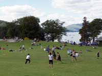 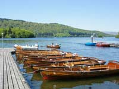 |
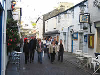 |
 |
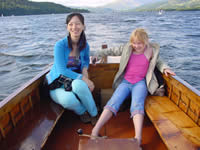 |
Public Transport:
| By rail: Windermere is the nearest railway station and final stop on the branch line from Oxenholme the Lake District which stands on the West Coast main line from London to Scotland. The 25 minute journey from Oxenholme to Windermere has station stops at Kendal; Burneside and Staveley. Windermere Station is 2 miles from Bowness-on-Windermere. |
|||
| By car: Situated on the A591, Windermere and Bowness are easily accessible from the M6 motorway, exiting at J36. |
|||
| By bus: | |||
| Service 599 - Open Top. Operating between Bowness Pier, Windermere Railway Station, Troutbeck Bridge, Brockhole, Ambleside, Rydal (for Rydal Mount and Dove Cottage, the homes of William Wordsworth) and Grasmere. | Service 508 - A summer only service from late July to the end of August to Patterdale, Glenridding, Aira Force Park and Pooley Bridge in the beautiful Ullswater Valley and Penrith Railway Station. | Service 618 - Operates between Barrow-in-Furness and Ambleside via Newby Bridge and Ulverston with connecting services for Lake Cruises at Waterhead (Ambleside) and Bowness-on-Windermere. Bowness Bus stop is opposite the pier. | Service 517 - The Kirkstone Rambler from Bowness-on-Windermere to Glenridding. This is a seasonal service over a wonderfully scenic route to the Ullswater Valley via the 1500 feet Kirkstone Pass. |
| Service 525 - Cross Lakes to Ferry House and Hawkshead operated by Mountain Goat Tours. Details from Bowness-on-Windermere Tourist Information Office, Glebe Road. | Service 516 - Langdale Rambler between Ambleside and Dungeon Ghyll via Skelwith Bridge, Elterwater and Chapel Stile. | Service 505 - The Coniston Rambler between Coniston, Hawkshead and Ambleside. | Explorer Tickets: Enquire about Stagecoach and Explorer bus tickets which offer unlimited travel on Stagecoach buses throughout the Lake District & Cumbria. There are One Day, Four day and Seven Day explorer tickets. |
| City Hopper - Reays City Hopper Service 55 operating between Keswick and Bowness on Windermere Pier seven days a week. The service calls at Windermere Railway Station, Troutbeck Bridge, Waterhead Hotel and Rydal Church among others. Full service details www.reays.co.uk |
|||
| Post Office - St Martins Parade at the rear of the church. Open Monday – Friday from 9am – 5.30pm. Saturdays from 9am – 12.30pm. Closed on Sundays. |
Love the Lakes - Take home something special from the Lake District.
We specialise in locally sourced gorgeous gifts for you, your family and friends. The majority of the items we sell are made in Cumbria and the Lake District. Our stores are situated in Bowness on Windermere and in Keswick.
www.lovethelakes.net
Attractions and Things to Do and See in Bowness on Windermere |
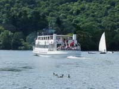 Lake Windermere CruisesFew visitors to Windermere and Bowness fail to take a cruise on England’s largest lake. Regular sailings depart from Bowness Pier on 364 days a year calling at Waterhead (Ambleside), Lakeside, and, during the summer months, Brockhole Visitor Centre by request. Passengers may leave the boat at any of the destinations and return on a later sailing. Alternatively, a Blue Island Circular Cruise of around 45 minutes duration without stops, provides the chance to sit back and absorb the beauty of the passing wooded shorelines and vista of the encircling mountains dominated by the imposing peaks of the Langdale Pikes. www.windermere-lakecruises.co.uk or telephone 015394 42600 to contact the events and reservations team. Please be aware that not all sailings offer easy wheelchair access and that toilets on all of the craft can only be accessed by a stairway. |
|||
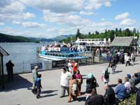 Bowness PromenadeThe appeal of this flourishing edge of the lakes waters can be measured by the numbers gathered there throughout the year especially during the summer months. All are attracted by the shops, pubs, cafes and restaurants of the nearby lower reaches of Bowness village and the amenities close to the shoreline. For many, the large friendly assembly of ducks, swans and seabirds all clamouring to be fed are the real stars of the promenade spectacle. Facing south and with “land of make believe” lake views, is a large grassed area ideal for lounging, sunning, resting and picnics. In the mid-year months, a diverse range of festivities take place on its slopes. See our Events Page for dates and details. Other attractions include a well laid out putting green and seasonal fire engine rides; always a favourite with the children. Cockshott Point, beginning at the southern extremity of the promenade, is a much loved lakeside walk with plenty of space to pause and reflect on the beauty of the setting and has easy wheelchair and pushchair access. It is requested that dogs should be kept on a lead in this area. Bowness Pier is well served by regular bus services from Windermere Railway Station and connections to Ambleside, Grasmere, Keswick, Lancaster, Kendal, Barrow, cruise embarkation, rowing and motor boat hire, taxi rank, park and ride service and toilet facilities. |
|||
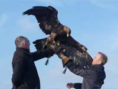 Predator ExperiencePredator Experience offers an exciting range of interactive experiences. Whether you would like to take to the fells on an Eagle Experience with a Golden and White-tailed Sea Eagle, amble through the woodlands with a hawk or explore the forests with wolves. Your journey starts here. Contact 07733366748 or 07500956348 email info@predatorexperience.co.uk. Contact us through our website at www.predatorexperience.co.uk |
|||
| World of Beatrix Potter Attraction "Strikes a blow for Style and Intelligence" said the Times Literary Supplement. Winner of Local Food and Drink Award. A remarkable presentation of Beatrix Potter stories given life by an imaginative indoor re-creation of sights and sounds of the Lake District and interactive virtual walks. Convenient translations in French, Dutch, Japanese and Chinese are available. Tea rooms, gift shop, parent and baby facilities, children’s activity area and the child pleasing Peter Rabbit tea-parties throughout the year. Summer opening 10am. – 5.30 pm. Winter 10am. – 4.30pm. www.hop-skip-jump.com www.misspottermovie.co.uk |
Brockhole Visitor Centre A beautiful lakeside position of rare trees, plants, shrubs, gardens and games lawn. The Centre provides a mixture of individual and family activities throughout the season plus exhibitions, films, presentations, a bird hide, boat and canoe hire each weekend and during school holidays Easter-October. For those arriving by boat, bus, bike, or on foot, entrance is free. For cars, there is a pay and display parking area. Good wheelchair and pushchair access. Dogs on leads welcome. Two miles from Windermere Railway Station from where buses 555 and 599 depart and call at Brockhole. www.lake-district.gov.uk |
||
| Water Sports Qualified instructors are available to teach the skills of canoeing, kayaking, sailing, water skiing, wake boarding and wake surfing. Yes, despite the 10 mph. water speed limit, water skiing is still possible. For details of all the above and more, go to www.elh.co.uk/watersports or contact any of the promenade based boat hire offices. |
Old Laundry Theatre. Bowness The comfortable 250 seat theatre is located within the Beatrix Potter Museum on Crag Brow. It is Cumbria’s only professional in-the-round-theatre. This year our lively annual season of music, theatre, comedy and film commences in August and finishes in December. Programme details can be found on www.oldlaundrytheatre.co.uk |
||
| Blackwell Arts and Crafts House. Bowness Blackwell has been described as one of the countrys most important examples of Arts and Crafts architecture. Visitors to the house are free to move around without restrictions of roped off areas. Window seats provide excellent vantage points from which to admire the stunning scenes of lake and mountains. There’s chance to browse the contemporary craft shop and book shop, stroll the terraces and landscaped gardens and enjoy refreshments of home made food and drinks in the tea shop. Free parking. Disabled facilities. Great photography opportunities. One and a half miles south of Bowness. www.blackwell.org.uk |
Steamboat Museum (Closed for development) A lakeside setting of a fine indoor and outdoor display of vintage steam boats including the S.L. Dolly, a relic of the 1850’s, and the only known mechanically powered boat in existence. Tea and sandwiches are provided on a cruise aboard one of the steam boats operating five days a week, (on fine days only) during the summer months. See also the beautifully restored T.S.S.Y. Esperance which was the model for the houseboat captained by the doughty Captain Flint in Arthur Ransomes “Swallows and Amazons”. Parking, model boat pond, picnic area, tea room and shop. Disabled access. www.steamboat.co.uk |
||
| Aquarium of the Lakes Take the boat from Bowness-on-Windermere Pier to Lakeside to see over 30 species of wildlife and freshwater species. www.lakesaquarium.co.uk |
Cross Lakes Experience A combination of a lake cruise and a mini-bus between Bowness-on-Windermere, Hawkshead, Grizedale and Coniston. Full details from the Bowness-on-Windermere Tourist Information Centre, Glebe Road. |
||
| Beatrix Potters Hill Top Farm Home of Beatrix Potter from where she wrote many of her world famous children’s stories. A short journey across Lake Windermere by car ferry from Ferry Nab to Ferry House where the ferry combines with a bus service to Hawkshead via Hill Top. Details of timetables from The Tourist Information Centre on Glebe Road, Bowness. |
St Martin's Church St Martins Church. Built in 1483 with restoration in 1870. To the rear of the building is the oldest part of Bowness-on-Windermere. The church contains a 15th C stained glass window showing the coat of arms of John Washington, an ancestor of George Washington. During out of season months the church can usually be visited on weekday mornings between 9.30am and about 1pm. ( Communion Service takes place in the chapel on Wednesdays between 10.30am and 11.15am.) The churchyard is always open to visitors and includes the listed gravestone at the east end at the church of Rasselas Belfield. (See “Sites of Memory” site) A tombstone at the west end of the church commemorates John Bolton, owner of Storrs Hall, local benefactor and associated with the slave trade. |
||
| Fell Foot Park Six miles from Bowness-on-Windermere on the road to Newby Bridge. The National Trust owned park at the southern end of the lake is ideal for gentle relaxation; paddling; swimming; boating; kayaking. Rowing boats and kayaks are available on site for hire and there's an adventure playground and boathouse café. Picnics and barbecues in designated areas. |
Lakeland Segway A novel way to see the Lake District. Full training provided followed by a ride around the scenic Lakeland estate of Graythwaite close to the shores of Lake Windermere. www.lakelandsegway.co.uk |
||
| Bowness Total Adventure Ltd Zip Wire; water sports; climbing wall; gorge scrambling; kayaking; rock climbing; abseiling and more. There are activity days catering for short field trips; corporate team building; stag & hen parties. Qualified instructors are on hand to help visitors with all activities. Contact the Boat House, Ferry Nab Road. Bowness-on-Windermere. www.total-adventure.co.uk |
Windermere Golf Club A friendly welcome for temporary members to a club which has been referred to as a “miniature Gleneagles”by the golfing press. Standing on Crook Road above Bowness-on-Windermere it offers spectacular views over the lake and surrounding fells. www.windermeregolfclub.co.uk |
||
| Cockshott Point It's thanks to Beatrix Potter that this relaxing lakeside stroll has been preserved who saved the land from private development. It is accessed from Glebe Road or Ferry Nab car park near the refreshment kiosk. Suitable for push chairs/wheelchairs. Benches are there for rest and quiet contemplation especially at sunsets. |
Biskey Howe A nice gentle walk. Take the turning up Helm Road at the top of Crag Brow and follow the short incline to Biskey Howe where there is a marker identifying the fells which can be seen. This short walk can be combined with a visit to Post Knott by turning right just before Biskey Howe and follow the signs for Post Knott. Great views over the lake. |
||
| Royalty Cinema The cinema has 3 screens offering the latest releases. Number 1 Screen is the original auditorium with a 1930's ambience and 400 seats in stalls and circle. Number 2 Screen is a self-contained cinema of 100 seats and air-conditioning. Number 3 Screen is a studio cinema of 65 seats and air-conditioning. Of interest is the cinema's rare Wurlitzer Theatre Pipe Organ dating from 1927 which was originally installed in a theatre in Cleveland, Ohio. |
Claife Station This is one of the areas “folly's” situated at Claife Heights overlooking Lake Windermere. It was built in the 1790's and used to provide a viewing point for tourists of the 1830's and 1840's. The windows were it's most unusual features where each gave a different aspect and were of differing coloured tinted glass with the intention of highlighting the effects of the landscapes. Yellow was for Summer; Orange for Autumn; light Green for Spring; light Blue for Winter; dark Blue for Moonlight and a Lilac to give a thunderstorm effect. The windows are no longer there. Access is via a ferry crossing from Ferry Nab. |
||
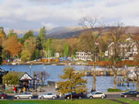 |
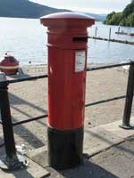 |
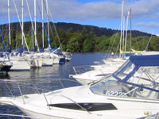 |
|
| Ash Street Opposite St Martins Church. This narrow pedestrian only street is full of character and contains several restaurants and cafés with indoor and outside seating; speciality shops and clothing stores. |
Feeding the swans & ducks Whilst the everyday presence of the “listed” Edward V11 post box on the promenade passes almost unnoticed, the swans and ducks of the lake certainly make sure their presence is known. Feeding their seemingly endless appetites is always a popular pastime. |
||
| Lakeside & Haverthwaite Railway Once a freight and passenger line connecting Lakeside to Ulverston, Barrow-in-Furness and onwards into Lancashire. Now only 3.5 miles remain from Haverthwaite, through Newby Bridge to the terminal at Lakeside where steamers arriving from Bowness-on-Windermere connect for a leisurely steam train journey through the Levens Valley to Haverthwaite. On arrival there, visitors can view a collection of restored steam and diesel engines; take a meal in the Station Restaurant; browse the gift shop or visit the newly developed Woodland Adventure Playground. Combination tickets are available for the rail and boat journey to the Lakes Aquarium, the World of Beatrix Potter and the Lakeland Motor Museum. The Railways special events programme includes; Santa Specials. Thomas the Tank Engine weekends. Halloween “Ghost Train” and Witches & Wizard Weeks. Family Fun Weekends. |
18th Century & earlier buildings Bowness-on-Windermere has several fine examples of 18th C and earlier residential and commercial architecture and, although relatively recent, the steamer ticket offices and the Edward V11 Post Box on the promenade are commemorations to an earlier age. Belle Isle, Lake Windermere's largest island standing in Bowness Bay has an interesting history where remains dating back to Roman times have been discovered. On it is England's earliest completely round house built in 1774. (it was not approved by William Wordsworth) During the English Civil War, the island came under a minor siege when Robert Phillipson, a local Royalist supporter was threatened by a group of Roundheads led by Colonel Briggs. Enraged, Phillipson was able to make his way to Kendal where brandishing his sword he rode his horse into the Parish Church where Briggs was attending a church service. His intention was to take Briggs prisoner. However, the congregation chased him away, and in his escape from angry parishioners, Phillipson lost his sword and helmet. These items are displayed high on the wall inside the church. |
||
| Storrs Hall Temple Another “folly” set in the grounds of the Storrs Hall Hotel on the edge of the lake. It's a National Trust owned “Temple”in the form of an octagonal garden house designed by Joseph Gandy. |
|||
Food and Drink in Bowness and Windermere |
| Hooked At Windermere's newest seafood restaurant opened November 2010, owner Michael Gould strives to serve you the freshest & tastiest seafood with flavours & influences from the Mediterranean, South East Asia & Australasia. Chef Paul White changes the menu daily depending on availability & local fish supplier C & G Neve, in nearby Fleetwood are known for supplying the freshest & highest quality to some of the northwest's finest restaurants. www.hookedwindermere.co.uk |
Sail 'N' Dine An experience to enjoy the beauty of the English Lake District combined with fine wines and first class food. Enjoy a meal on a 32 foot yacht on Lake Windermere, England’s largest lake. For details call or e-mail Phone: 07976 214569 Email: info@sailndine.co.uk www.sailndine.co.uk |
Jintana Thai Restaurant Lake Road, Bowness. Phone: 015394 45002 |
|
| Prince of India Crescent Road, Windermere. Phone: 015394 45244 |
Oriental Kitchen 13, Crescent Road, Windermere. Phone: 015394 45110 |
Royal Tea Garden Royal Square, Bowness. Phone: 015394 45510 |
Mrs B’s Restaurant Ellerthwaite Square, Windermere. Phone: 015394 42363 |
| Messina Restaurant Beresford Road, Windermere. Phone: 015394 88488 |
Robertos European with Spanish influences. Queen Street, Bowness. Phone: 015394 43535 |
Rastellis Pizzeria Lake Road, Bowness. Phone: 01539444227 |
Rumours Pizzeria Lake Road, Bowness. Phone: 015394 44382 |
| Villa Positano Ash Street, Bowness. Phone: 015394 45663 |
Trattoria Ticino Swiss/Italian cuisine. Quarry Rigg, Bowness. Phone: 015394 45786 |
Francines Coffee House & Restaurant 27a Main Road, Windermere Phone: 015394 44088 |
Jerichos Restaurant Birch Street, Windermere. Phone: 015394 42522 |
Transportation in Bowness and Windermere |
| Lakeland Chauffeurs Lakeland Chauffeurs offers a luxurious way to travel in beautifully presented English classic cars. The Rolls Royce Silver Shadow 1 and 4.2 Litre supercharged Jaguar XJR have full leather interiors and look magnificent in stunning silver. Our professional chauffeur service provides courteous, knowledgeable and safe drivers ensuring a memorable experience every time. Phone: +44 (0)778 663 1456 Email: info@lakesdrive.co.uk Web: www.lakesdrive.co.uk |
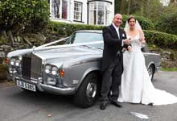 |
| Road Train: A short circular route between Bowness Pier and Braithwaite Fold car Park. | |
| Electric Mountain: Have you ever fancied the view from the saddle but never fancied the burn in your legs? If the answer is yes then an electric bike could be the answer for you! www.electric-mountain.co.uk |
|
| Car Parks: | |||
| Rayrigg Road Pay & Display. Toilet facilities (20P) A few minutes walk from lake and shops. | Quarry Mount Pay & Display. Toilet facilities (20P) In the town but within view of the lake. Close to shops, eating places and cinema. | Braithwaite Fold Pay & Display. A large car park of grassed area and hard standing on Glebe Road; toilets (20P) and small café; 5 minutes walk to the lake or take the “Road Train” to the promenade. | Glebe Road Pay & Display. Overlooking the lake. Access to Cockshott Point Walk is opposite. |
| Glebe Road roadside parking No charge but time restrictions apply. | Rayrigg Meadows About three quarters of a mile from Bowness-on-Windermere on the Rayrigg Road. Toilets (20P). Immediate access to lake-shore footpaths. | Rectory Road Close to Glebe Road and Tourist Information Centre. This is mainly a coach park but there are limited car parking spaces. Café and immediate access to the Glebe Recreation Ground and lake-side. Toilets (20P) on the corner of Glebe Road and next to the Information Centre. | Ferry Nab Car Park On the road to the ferry from the A 592. Pay & Display. Toilets (20P) Snacks from a small outdoor seating only kiosk. Close to lake; Cockshott Point, and launching for canoes and Kayaks. |
| Taxi Services: | ||
| Pegasus Taxis & Travel This Bowness on Windermere based service provides local and long distance journeys; airport transfers; wedding hire; courier work; hen & stag party hire; school runs and safe and secure luggage storage at their Bowness office premises. Phone 015394 48899 Fax 015394 44453 www.pegasustaxisandtravel.com |
Windermere Taxi Service Courteous, friendly reliable service. Local and long distance. Phone: 015394 42355 www.windermeretaxisonline.com/Windermere_Taxis |
Lakes Taxis Prompt and reliable. Phone: 015394 44055 or 46777 |